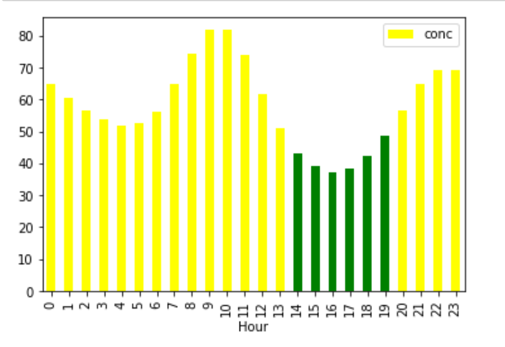
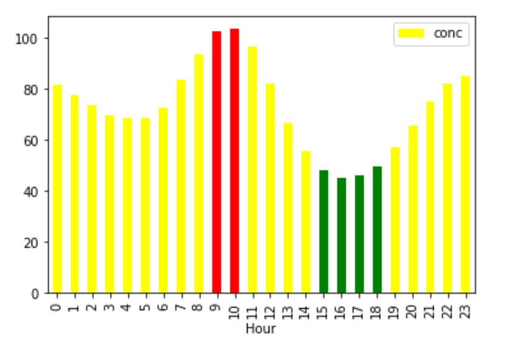
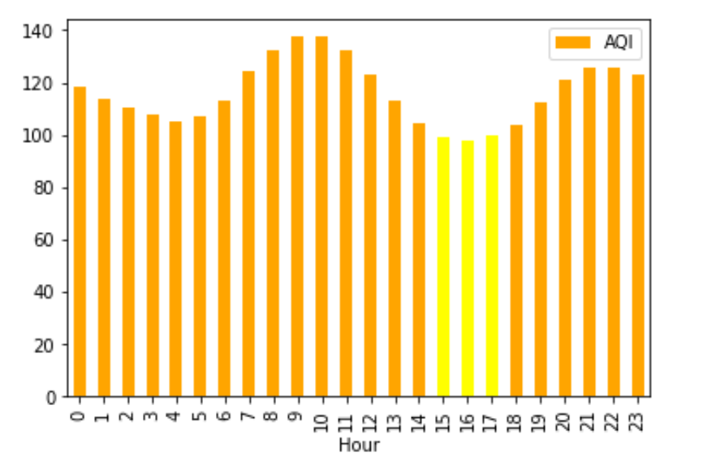
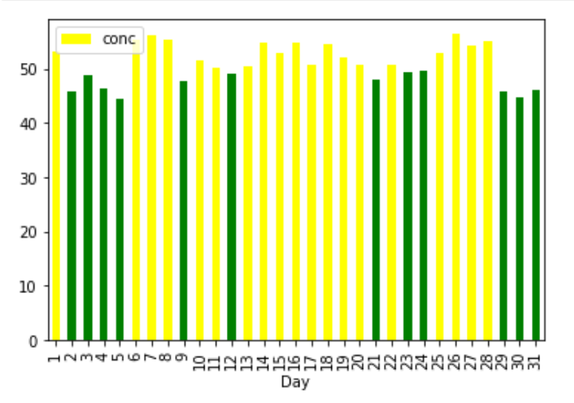
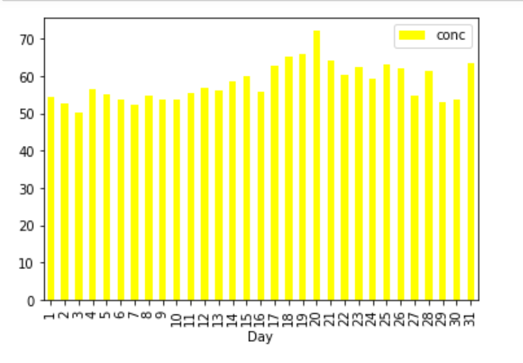
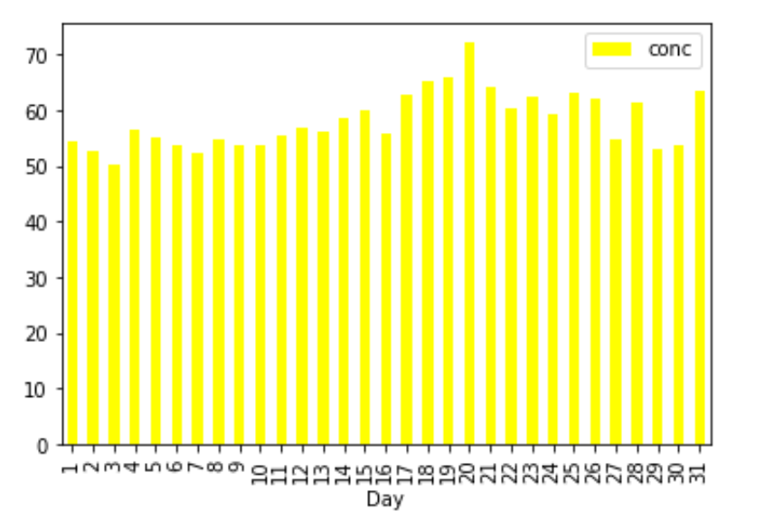
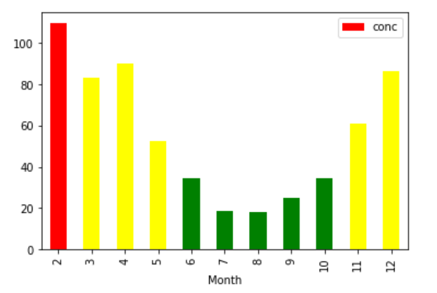
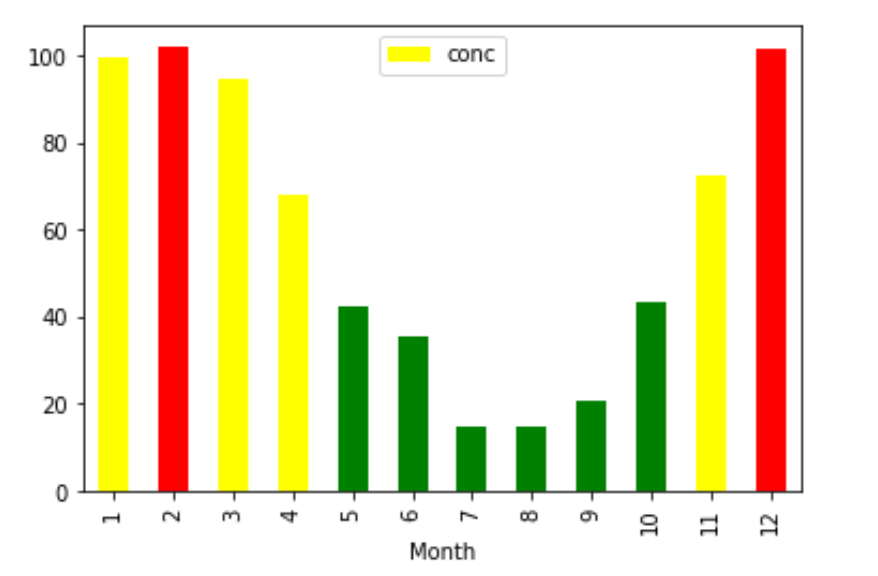
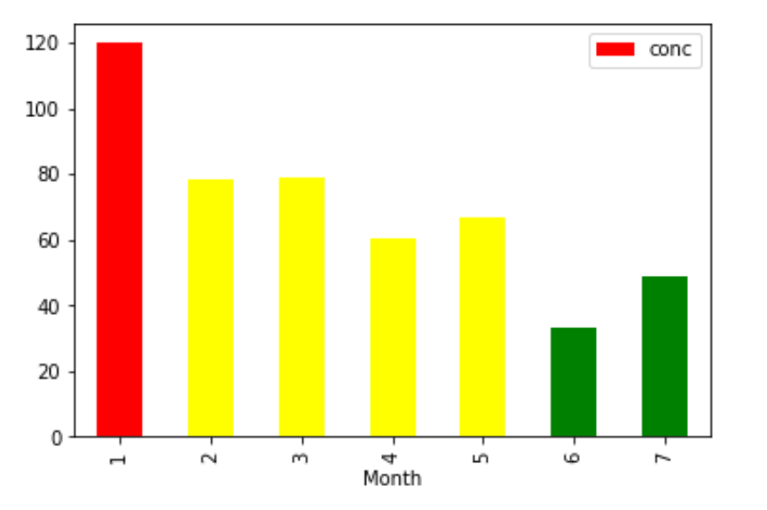

Published October 14, 2019
Kathmandu was recently ranked the third most polluted city in the world. How have pollution levels changed over the years, and what trends can we find? In the datasets below, the bars represent pollution levels; green is safe, yellow is mild, red is dangerous, and orange is highly dangerous.
2017
2018
2019
Source: https://np.usembassy.gov/embassy/air-quality-monitor/
In all three years, we can see that air pollution levels are lowest from approximately 2 p.m. to 7 p.m., and highest around 10 a.m., however, the overall air pollution has increased over the years.
2017
2018
2019
https://np.usembassy.gov/embassy/air-quality-monitor/
Here, we see that the overall pollution levels have increased over the years are there are no more "green" bars.
2017
2018
2019
https://np.usembassy.gov/embassy/air-quality-monitor/
Here, we can see that the safest months are from June to October, most likely because of the rainy season. Peak air pollution months are December to February. In addition, as in the other charts, overall air pollution levels have increased. Note that the scale increased from a maximum of 100 in 2017 & 2019 to 120 in 2019.
In conclusion, the safest times of the day are from 2 - 6 p.m., and the safest months are from July to October. Other than that, air pollution levels are slowly increasing every year.